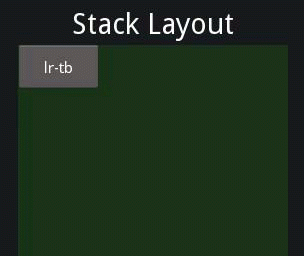
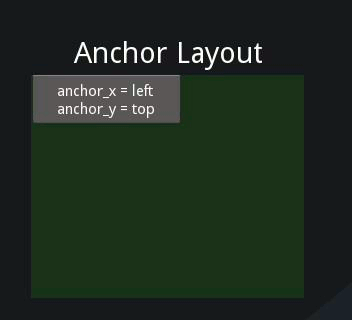
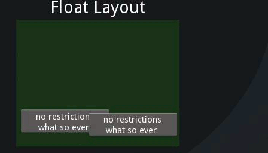
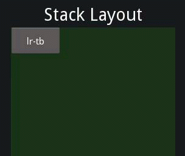
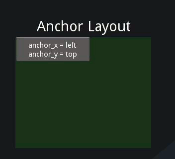
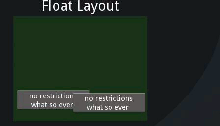
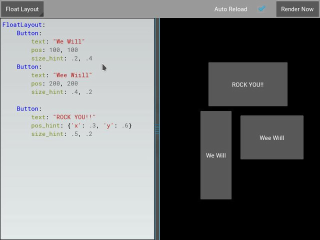
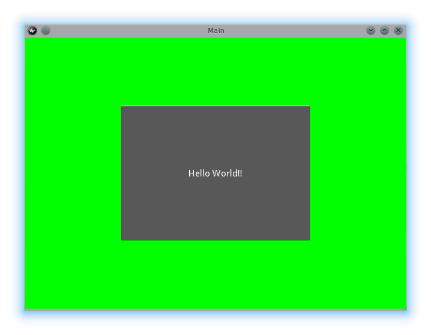
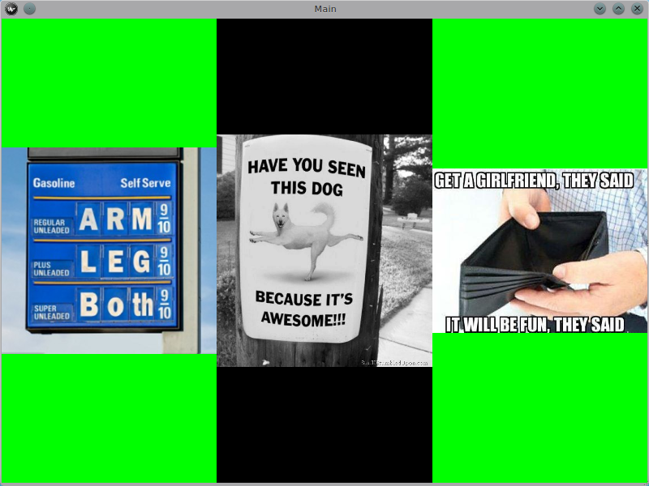
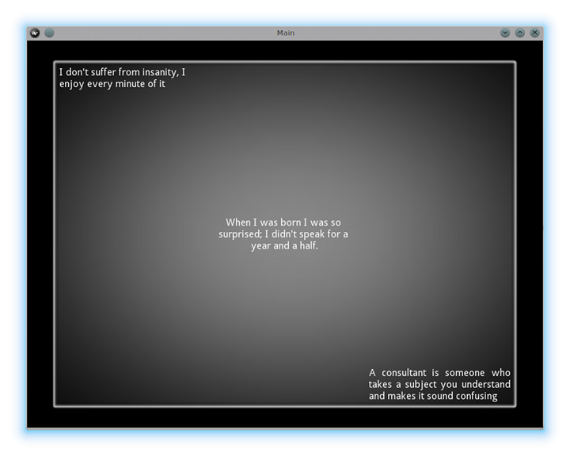

{kind=link}
Table Of Contents
Widgets¶
Introduction to Widget¶
ウィジェット(Widget)は Kivy の GUI インターフェイスの基本構成要素です。 それは画面に描画するために使用できる Canvas を提供します。 それはイベントを受け取り、それに反応します。 ウィジェット(Widget)クラスについての詳細な説明については、 当該モジュールのドキュメントを参照してください。
Manipulating the Widget tree¶
Kivy のウィジェットはツリー構成になっています。 アプリケーションには「ルート・ウィジェット」(root widget)があり、 通常は、 それぞれ独自の子(children)を持つことのできる子(children)を持っています。 ウィジェットの子は Kivy の ListProperty 型である children 属性として表されます。
ウィジェット・ツリーは、 以下のメソッドで操作できます:
add_widget(): あるウィジェットを子として追加しますremove_widget(): 子供達リストからあるウィジェットを削除しますclear_widgets(): あるウィジェットの全ての子を削除します。
たとえば、 あなたが BoxLayout 内にボタンを追加する場合は、 以下のようにします:
layout = BoxLayout(padding=10)
button = Button(text='My first button')
layout.add_widget(button)
これでボタンがlayoutに追加されます。 つまりボタンのparent(親)プロパティをlayoutに設定し、 layoutの子供達リストにボタンが追加されます。 layoutからボタンを削除するには以下のようにします:
layout.remove_widget(button)
削除すると、 ボタンのparent(親)プロパティが None に設定され、 layoutの子供達リストからボタンが削除されます。
ウィジェット内のすべての子をクリアしたい場合は clear_widgets() メソッドを使用します:
layout.clear_widgets()
警告
自分が何をしているのか本当によくわかっていない限り、 自分で子供達リスト(children list)を操作しないでください。 ウィジェット・ツリーはグラフィック・ツリーに関連付けられています。 たとえば、あなたがあるウィジェットを子供達に追加する時にそのcanvasをグラフィックス・ツリーに追加しないでいると、ウィジェットは子になりますが、 画面には何も描画されません。 さらに、 その後の add_widget や remove_widget や clear_widgets の呼び出しで問題が発生する可能性があります。
Traversing the Tree¶
Widget クラスのインスタンスの children リスト・プロパティは、すべての子を含んでいます。 以下のようにして、 ツリーを簡単に縦走(traverse)できます:
root = BoxLayout()
# ... add widgets to root ...
for child in root.children:
print(child)
ただし、 これは慎重に使用する必要があります。 前のセクションで示したいずれかの方法で子供達リストを変更する場合は、 以下のようにリストのコピーを使用する必要があります:
for child in root.children[:]:
# manipulate the tree. For example here, remove all widgets that have a
# width < 100
if child.width < 100:
root.remove_widget(child)
デフォルトでは、 ウィジェットは子の サイズ(size)/位置(pos) に影響を与えません。 pos 属性は画面座標の絶対位置(あなたが relativelayout を使用しない場合。 これについては後述します)であり、 size は絶対サイズです。
Widgets Z Index¶
ウィジェットの描画順序は、 ウィジェット・ツリー内のウィジェットの位置に基づきます。 add_widget メソッドは、 ウィジェット ツリーでの位置を指定するために使用できる index パラメータを指定可能です:
root.add_widget(widget, index)
index値の小さいウィジェットは、 index値の大きいウィジェットより上に描画されます。 index のデフォルトは 0 であるため、 特に指定しない限り、 後で追加されたウィジェットは他のウィジェットより上に描画されることに注意してください。
Organize with Layouts¶
レイアウト(layout)は子供達のサイズと位置を制御する特別な種類のウィジェットです。 さまざまな種類のレイアウトがあり、 子供達のさまざまな自動編成を可能にします。 レイアウト(Layout) は size_hint と pos_hint プロパティを使用して、 子供達(children)のサイズ(size)と位置(pos)を決定します。
 





BoxLayout: ウィジェットを(垂直または水平に)隣接させる作法で、すべてのスペースを埋めます。 子供達の size_hint プロパティを使用して、各子供に許可される比率を変更したり、 一部の子に固定サイズを設定したりできます。
GridLayout: ウィジェットを格子状に配置します。 Kivyが要素のサイズとそれらの配置方法を計算できるように、 格子の(幅・高さ)寸法のずれか１つ以上を指定する必要があります。
StackLayout: ウィジェットを互いに隣接させて配置しますが、 スペース全体に収まるようにせずに、 (幅・高さ)いずれかの寸法の１つをサイズ指定します。 これは、定義済みの同じサイズの子供達を表示するのに便利です。
AnchorLayout: 子供達の位置のみを考慮した単純なレイアウト。 子供達をレイアウトの枠から相対的な位置に配置できます。 size_hint は無視されます。
FloatLayout: レイアウト・サイズに対して絶対的または相対的に、 任意の位置とサイズで子供達を配置できます。 デフォルトの size_hint (1, 1) では、すべての子供達がレイアウト全体と同じサイズになるため、 複数の子供達がいる場合は、 この値を変更することをお勧めします。 size_hint を (None, None) に設定すると、size で絶対サイズを使用できます。 このウィジェットは、 レイアウト位置に関連する辞書型位置設定(dict setting position)として pos_hint も尊重します。
RelativeLayout: FloatLayout のように振る舞いますが、 子供達の位置は画面(screen)ではなくレイアウト(layout)の位置に相対的です。
個々のレイアウトのドキュメントを調べて、 より深く理解するようにしてください。
size_hint は、 size_hint_x と size_hint_y の ReferenceListProperty です。 各値として 0 〜 1 または None を受け入れ、 デフォルトは (1, 1) です。 これは、 ウィジェットがレイアウト内にある場合、 レイアウトが可能な限り多くの場所を縦横両方向に(レイアウト・サイズに対して)割り当てることを意味します。
たとえば、 size_hint を (0.5, 0.8) に設定すると、 レイアウト(layout)内のウィジェット(Widget)で使用可能なサイズの、 幅が 50%、高さが 80% になります。
以下の例について考えてみましょう:
BoxLayout:
Button:
text: 'Button 1'
# default size_hint is 1, 1, we don't need to specify it explicitly
# however it's provided here to make things clear
size_hint: 1, 1
これから以下のように入力してkivyカタログをロードしますが、 $KIVYDIR をあなたがインストールしたディレクトリに置き換えてください(os.path.dirname(kivy.__file__) で検出可能です)(訳注:手元の Kivy 2.1.0 では <venv dir>/share/kivy-examples/demo/kivycatalog でした):
cd $KIVYDIR/examples/demo/kivycatalog
python main.py
新しいウィンドウが表示されます。 左側の 'Welcome' スピナー(Spinner)の下にある領域をクリックし、 そこのテキストを上記 kv コードで置き換えます。

上の画像からわかるように、Button はレイアウト・サイズ(size)の 100% を占めています。
size_hint_x / size_hint_y を 0.5 に変更すると、 Widget は layout の width / height の 50% を占めるようになります。

ここでは、あなたは size_hint_x と size_hint_y の両方を 0.5 に指定していますが、 size_hint_y だけが受け入れられているように見えます。 これは、 boxlayout が、 向き(orientation)が vertical (縦)の場合は size_hint_y を制御し、 向き(orientation)が 'horizontal' (横)の場合は size_hint_x を制御するためです。 管理寸法のサイズ(controlled dimension's size)は、 子(children)の boxlayout の総数に応じて計算されます。 この例では、 1 つの子の size_hint_y が制御されています (0.5/0.5 = 1)。 したがって、 ウィジェットは親レイアウトの高さの 100% を使用します。
別のボタン(Button)をレイアウト(layout)に追加して、何が起こるか見てみましょう。

boxlayout は、その性質上、使用可能なスペースをその子供達(children)の間で均等に分割します。 この例では、 子供(children)が 2 人いるため、比率は 50 対 50 です。 子供の内の 1 人で size_hint を使用して、 その結果を見てみましょう。

ある子供が size_hint を指定した場合、 これは、 そのウィジェット(Widget)が boxlayout によって指定されたサイズ(size)からどれだけのスペースを取るかを指定します。 この例では、 最初のボタン(Button)で size_hint_x に 0.5 を指定しています。 よってウィジェットのスペースは以下のように計算されます:
first child's size_hint divided by
first child's size_hint + second child's size_hint + ...n(no of children)
.5/(.5+1) = .333...
BoxLayout の残りの width は 残りの子供達(children)に分割されます。 この例では、 2 番目の Button が layout の width の66.66%を占めることを意味します。
size_hint を試してみて、 それに慣れてください。
ウィジェット(Widget)の絶対サイズ(size)を制御したい場合は、 size_hint_x/size_hint_y またはその両方を None に設定して、ウィジェットの幅(width)や高さ(height)の属性が尊重されるようにします。
pos_hint は辞書(dict)であり、デフォルトは空です。 size_hint に関しては、 レイアウトは異なる方法で pos_hint を尊重するけれども、 一般的には、 あなたは位置(pos)属性のいずれか(x, y, right, top, center_x, center_y)に値を追加して、 ウィジェット(Widget)をその親(parent)に対して相対的に配置することができます。
pos_hint を視覚的に理解するために、 kivycatalog で以下のコードを試してみましょう:
FloatLayout:
Button:
text: "We Will"
pos: 100, 100
size_hint: .2, .4
Button:
text: "Wee Wiill"
pos: 200, 200
size_hint: .4, .2
Button:
text: "ROCK YOU!!"
pos_hint: {'x': .3, 'y': .6}
size_hint: .5, .2
これは以下の結果を得ます:
size_hint と同様に、 ウィジェットの位置に与える影響を理解するために pos_hint も試してみてください。
Adding a Background to a Layout¶
レイアウトに関するよくある質問(FAQ)の 1 つは、 以下のとおりです:
「背景画像/背景色/背景動画/... をレイアウトに追加する方法は？」
レイアウトには、その性質上、視覚的な表現がありません。 つまり、デフォルトでは、キャンバス(canvas)の指定はありません。 ただし、 色付きの背景を追加する場合と同様に、 キャンバス(canvas)の指定をレイアウト・インスタンスに簡単に追加できます:
Python で書いてみる:
from kivy.graphics import Color, Rectangle
with layout_instance.canvas.before:
Color(0, 1, 0, 1) # green; colors range from 0-1 instead of 0-255
self.rect = Rectangle(size=layout_instance.size,
pos=layout_instance.pos)
残念ながら、 これはレイアウトの初期位置とサイズで四角形を描画するだけです。 四角形がレイアウト内に確実に描画されるようにするには、 レイアウトの サイズ/位置 が変更されたときに、 変更をリッスンして四角形のサイズと位置を更新する必要があります。 以下のような Python コードにします:
with layout_instance.canvas.before:
Color(0, 1, 0, 1) # green; colors range from 0-1 instead of 0-255
self.rect = Rectangle(size=layout_instance.size,
pos=layout_instance.pos)
def update_rect(instance, value):
instance.rect.pos = instance.pos
instance.rect.size = instance.size
# listen to size and position changes
layout_instance.bind(pos=update_rect, size=update_rect)
kv 言語では以下のようにします:
FloatLayout:
canvas.before:
Color:
rgba: 0, 1, 0, 1
Rectangle:
# self here refers to the widget i.e FloatLayout
pos: self.pos
size: self.size
kv 宣言は、 暗黙のバインディングを設定します。 最後の 2行は floatlayout の位置(pos)が変更されたときに、 四角形の位置(pos)とサイズ(size)の値が更新されることを保証します。
上記スニペットを Kivy App のシェルに組み込みます。
Python のみで記述する場合:
from kivy.app import App
from kivy.graphics import Color, Rectangle
from kivy.uix.floatlayout import FloatLayout
from kivy.uix.button import Button
class RootWidget(FloatLayout):
def __init__(self, **kwargs):
# make sure we aren't overriding any important functionality
super(RootWidget, self).__init__(**kwargs)
# let's add a Widget to this layout
self.add_widget(
Button(
text="Hello World",
size_hint=(.5, .5),
pos_hint={'center_x': .5, 'center_y': .5}))
class MainApp(App):
def build(self):
self.root = root = RootWidget()
root.bind(size=self._update_rect, pos=self._update_rect)
with root.canvas.before:
Color(0, 1, 0, 1) # green; colors range from 0-1 not 0-255
self.rect = Rectangle(size=root.size, pos=root.pos)
return root
def _update_rect(self, instance, value):
self.rect.pos = instance.pos
self.rect.size = instance.size
if __name__ == '__main__':
MainApp().run()
kv 言語を使う場合:
from kivy.app import App
from kivy.lang import Builder
root = Builder.load_string('''
FloatLayout:
canvas.before:
Color:
rgba: 0, 1, 0, 1
Rectangle:
# self here refers to the widget i.e FloatLayout
pos: self.pos
size: self.size
Button:
text: 'Hello World!!'
size_hint: .5, .5
pos_hint: {'center_x':.5, 'center_y': .5}
''')
class MainApp(App):
def build(self):
return root
if __name__ == '__main__':
MainApp().run()
両方のアプリとも以下のようになります:
Add a color to the background of a custom layouts rule/class¶
複数のレイアウトを使用する必要がある場合、 レイアウトのインスタンスに背景を追加する方法はすぐに面倒になります。 そのために、 レイアウトをサブクラス化し、 背景を追加するあなた独自のレイアウトを作成できます。
Python で書いた場合:
from kivy.app import App
from kivy.graphics import Color, Rectangle
from kivy.uix.boxlayout import BoxLayout
from kivy.uix.floatlayout import FloatLayout
from kivy.uix.image import AsyncImage
class RootWidget(BoxLayout):
pass
class CustomLayout(FloatLayout):
def __init__(self, **kwargs):
# make sure we aren't overriding any important functionality
super(CustomLayout, self).__init__(**kwargs)
with self.canvas.before:
Color(0, 1, 0, 1) # green; colors range from 0-1 instead of 0-255
self.rect = Rectangle(size=self.size, pos=self.pos)
self.bind(size=self._update_rect, pos=self._update_rect)
def _update_rect(self, instance, value):
self.rect.pos = instance.pos
self.rect.size = instance.size
class MainApp(App):
def build(self):
root = RootWidget()
c = CustomLayout()
root.add_widget(c)
c.add_widget(
AsyncImage(
source="http://www.everythingzoomer.com/wp-content/uploads/2013/01/Monday-joke-289x277.jpg",
size_hint= (1, .5),
pos_hint={'center_x':.5, 'center_y':.5}))
root.add_widget(AsyncImage(source='http://www.stuffistumbledupon.com/wp-content/uploads/2012/05/Have-you-seen-this-dog-because-its-awesome-meme-puppy-doggy.jpg'))
c = CustomLayout()
c.add_widget(
AsyncImage(
source="http://www.stuffistumbledupon.com/wp-content/uploads/2012/04/Get-a-Girlfriend-Meme-empty-wallet.jpg",
size_hint= (1, .5),
pos_hint={'center_x':.5, 'center_y':.5}))
root.add_widget(c)
return root
if __name__ == '__main__':
MainApp().run()
kv 言語を使う場合:
from kivy.app import App
from kivy.uix.floatlayout import FloatLayout
from kivy.uix.boxlayout import BoxLayout
from kivy.lang import Builder
Builder.load_string('''
<CustomLayout>
canvas.before:
Color:
rgba: 0, 1, 0, 1
Rectangle:
pos: self.pos
size: self.size
<RootWidget>
CustomLayout:
AsyncImage:
source: 'http://www.everythingzoomer.com/wp-content/uploads/2013/01/Monday-joke-289x277.jpg'
size_hint: 1, .5
pos_hint: {'center_x':.5, 'center_y': .5}
AsyncImage:
source: 'http://www.stuffistumbledupon.com/wp-content/uploads/2012/05/Have-you-seen-this-dog-because-its-awesome-meme-puppy-doggy.jpg'
CustomLayout
AsyncImage:
source: 'http://www.stuffistumbledupon.com/wp-content/uploads/2012/04/Get-a-Girlfriend-Meme-empty-wallet.jpg'
size_hint: 1, .5
pos_hint: {'center_x':.5, 'center_y': .5}
''')
class RootWidget(BoxLayout):
pass
class CustomLayout(FloatLayout):
pass
class MainApp(App):
def build(self):
return RootWidget()
if __name__ == '__main__':
MainApp().run()
両方のアプリとも以下のようになります:
カスタム・レイアウト・クラスで背景を定義すると、 それが CustomLayout のすべてのインスタンスで使用されることが保証されます。
ここで、 組み込みの Kivy レイアウトの背景に画像または色を グローバルに 追加するには、 当該のレイアウトの kv ルールをオーバーライドする必要があります。 なので GridLayout を検討してみましょう:
<GridLayout>
canvas.before:
Color:
rgba: 0, 1, 0, 1
BorderImage:
source: '../examples/widgets/sequenced_images/data/images/button_white.png'
pos: self.pos
size: self.size
それから、 このスニペットを Kivy アプリに組み込みます:
from kivy.app import App
from kivy.uix.floatlayout import FloatLayout
from kivy.lang import Builder
Builder.load_string('''
<GridLayout>
canvas.before:
BorderImage:
# BorderImage behaves like the CSS BorderImage
border: 10, 10, 10, 10
source: '../examples/widgets/sequenced_images/data/images/button_white.png'
pos: self.pos
size: self.size
<RootWidget>
GridLayout:
size_hint: .9, .9
pos_hint: {'center_x': .5, 'center_y': .5}
rows:1
Label:
text: "I don't suffer from insanity, I enjoy every minute of it"
text_size: self.width-20, self.height-20
valign: 'top'
Label:
text: "When I was born I was so surprised; I didn't speak for a year and a half."
text_size: self.width-20, self.height-20
valign: 'middle'
halign: 'center'
Label:
text: "A consultant is someone who takes a subject you understand and makes it sound confusing"
text_size: self.width-20, self.height-20
valign: 'bottom'
halign: 'justify'
''')
class RootWidget(FloatLayout):
pass
class MainApp(App):
def build(self):
return RootWidget()
if __name__ == '__main__':
MainApp().run()
そうすると結果は以下のようになります:
GridLayout クラスのルールをオーバーライドしているため、 私達のアプリでこのクラスを使用すると、 その画像(image)が表示されます。
How about an Animated background?¶
RectangleやBorderImageやEllipseなどの描画命令を設定して、 特定のテクスチャを使用できます:
Rectangle:
texture: reference to a texture
これを使用して、 アニメーションの背景(animated background)を表示します
1from kivy.app import App 2from kivy.uix.floatlayout import FloatLayout 3from kivy.uix.gridlayout import GridLayout 4from kivy.uix.image import Image 5from kivy.properties import ObjectProperty 6from kivy.lang import Builder 7 8 9Builder.load_string(''' 10<CustomLayout> 11 canvas.before: 12 BorderImage: 13 # BorderImage behaves like the CSS BorderImage 14 border: 10, 10, 10, 10 15 texture: self.background_image.texture 16 pos: self.pos 17 size: self.size 18 19<RootWidget> 20 CustomLayout: 21 size_hint: .9, .9 22 pos_hint: {'center_x': .5, 'center_y': .5} 23 rows:1 24 Label: 25 text: "I don't suffer from insanity, I enjoy every minute of it" 26 text_size: self.width-20, self.height-20 27 valign: 'top' 28 Label: 29 text: "When I was born I was so surprised; I didn't speak for a year and a half." 30 text_size: self.width-20, self.height-20 31 valign: 'middle' 32 halign: 'center' 33 Label: 34 text: "A consultant is someone who takes a subject you understand and makes it sound confusing" 35 text_size: self.width-20, self.height-20 36 valign: 'bottom' 37 halign: 'justify' 38''') 39 40 41class CustomLayout(GridLayout): 42 43 background_image = ObjectProperty( 44 Image( 45 source='../examples/widgets/sequenced_images/data/images/button_white_animated.zip', 46 anim_delay=.1)) 47 48 49class RootWidget(FloatLayout): 50 pass 51 52 53class MainApp(App): 54 55 def build(self): 56 return RootWidget() 57 58if __name__ == '__main__': 59 MainApp().run()
ここで何が起こっているのかを理解するには、 15 行目をご覧下さい:
texture: self.background_image.texture
これは、 background_image の texture プロパティが更新されるたびに、 BorderImage の texture プロパティを更新することを指定します。 43 行目で background_image プロパティを定義しています:
background_image = ObjectProperty(...
これにより、 画像(Image)ウィジェットを追加する ObjectProperty として background_image が設定されます。 画像ウィジェットは texture プロパティを持っていて、 self.background_image.texture が表示されている場所では、 このプロパティへの参照である texture が設定されます。 画像ウィジェットはアニメーションをサポートします。 つまり、 アニメーションが変更されるたびに画像のテクスチャが更新され、 その過程で BorderImage 命令のテクスチャが更新されます。
カスタム・データをテクスチャに転送(blit)することもできます。 詳しくは Texture のドキュメントを見てください。
Nesting Layouts¶
レイアウトを入れ子にできますか？ ええ、もちろん！ どこまで入れ子にできるか見てみるのはとても楽しいです。
Size and position metrics¶
Kivy の長さのデフォルト単位はピクセル(pixel)で、すべてのサイズと位置はデフォルトではピクセルで表されます。 他の単位で表現することもできます。 これはデバイス間で一貫性を保つのに役立ちます(それらはピクセル単位のサイズに自動的に変換されます)。
使用可能な単位は pt, mm, cm, inch, dp, sp です。 あなたは metrics のドキュメンテーションでこれらの使用法を知ることができます。
screen モジュールを使用して、 あなたのアプリケーションの、 さまざまなデバイスでの画面をシミュレートすることもできます。
Screen Separation with Screen Manager¶
あなたのアプリケーションがさまざまな画面(screen)で構成されている場合、 ある画面(Screen)から別の画面に簡単に移動できる方法が必要になる可能性があります。 幸いなことに、 ScreenManager クラスがあり、これを使用すると、 画面を個別に定義し、 ある画面から別の画面への遷移(TransitionBase)を設定できます。